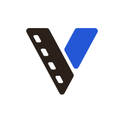
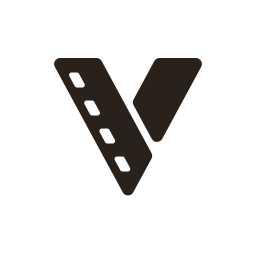

A strip of film folded into the letter V. The front arm carries four perforations down its outer edge; the back arm is the second colour and stops a hair short of the front one, so the fold reads as a clear gap. On a light ground the front arm is the ink #2B211B and the back arm the accent #2457D6; on the espresso tile (Windows) they are cream #FBF6EE and the night accent #7FA3FF; on the accent tile (Android) cream and a soft blue #BCCDF5. Below 24 px the small cut drops the perforations and widens the gap.
شريط فيلم مطويّ على شكل حرف V. الذراع الأمامية تحمل أربعة ثقوب على حافتها، والخلفية باللون الثاني وتقف دون الأمامية بفجوة رفيعة عند الطيّ. على ويندوز بلاطة حبرية، وعلى أندرويد بلاطة زرقاء. تحت 24 بكسل تسقط الثقوب وتتّسع الفجوة.







Everything here is generated by tool/icons/vidhoist_kit.py; edit the geometry there, not the files.